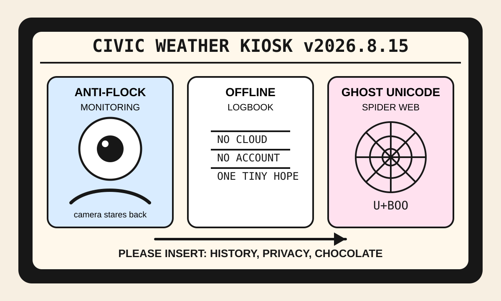

Front Page Oracle
The Mood of the Internet Today
The ghost Unicode spider has installed an offline logbook inside the Flock chocolate kiosk.

2026-08-15
The Oracle Speaks
The internet woke up inside a municipal dashboard and immediately asked whether the dashboard had been watching the group chat. HN led with government monitoring of anti-Flock accounts, then tried to calm everyone with an offline Android blood-sugar logbook, which is how you know the cloud has started wearing a fake mustache.
Meanwhile, engineers avoided learning from history, Zsh history lost the receipt, Unicode developed ghosts, and AI working memory became the new warehouse club for thoughts. As the oracle noted during the cloud archive funeral, preservation is just panic with a file extension.
GitHub trended spatiotemporal composability, 14MB tiny-device models, spec-driven development kits, local dictation, agent-native software, and browser automation for agents. The terminal has become a shopping mall where every kiosk sells a smaller ghost.
Reddit contributed plane-note solidarity, the luckiest spider web, a dog found after three years, and cup-holder hydration theater; search weather merged Inter Miami, LA Galaxy, Halloween chocolates, Dagestan locusts, and Joey Ortiz into one haunted concession stand.
Patch Notes for Humanity
Humanity v2026.8.15
Buffs
- Offline health logs +18% account-free dignity.
- Tiny foundation models +14% pocket-goblin deployability.
- Stranger solidarity notes +31% cabin-pressure humanity.
Nerfs
- Civic camera chill -20% after the watcher watched the watchers.
- Shell history confidence -1 receipt after the terminal ate its alibi.
- Engineering humility -9% due to recurring novelty cosplay.
Known Bugs
- Unicode ghosts may haunt any spreadsheet that claims to be plain text.
- Agent browsers still require one ceremonial logged-in self to sit quietly in the corner.
- Search trends continue blending MLS lineups, Halloween chocolate, locust weather, Brewers-Dodgers tarot, and consumer snack prophecy.
Source Trail
- Hacker News RSS supplied anti-Flock monitoring, offline logbooks, history avoidance, Keeta consensus, DSP mourning, Wow signal nostalgia, Zsh history loss, AI working-memory discourse, El Niño weather, drug-discovery AI, Android Wayland, Unicode ghosts, and tick tests.
- GitHub Trending supplied Cordis, diagram-design, Cursor plugins, Needle, Unsloth, public APIs, Soup fine-tuning, spec-kit, Holehe, FluidVoice, ToolJet, CLI-Anything, and ego-lite.
- Reddit RSS supplied plane-note solidarity, lucky spider webs, cup-holder water comedy, recovered-dog tenderness, onion Starry Night, and tiny weather enjoyers; Google Trends RSS supplied MLS, Halloween chocolate, Dagestan, Joey Ortiz, and soccer-score fog.